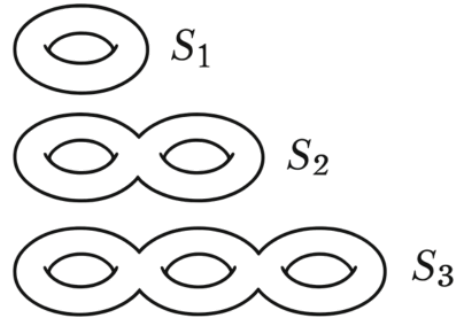
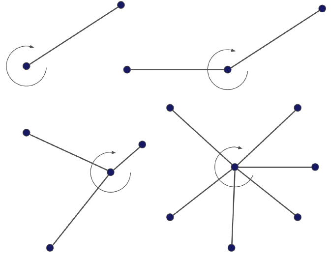
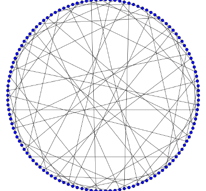

My undergraduate honors thesis, advised by François Clément, covers embedding graphs on surfaces.
During World War II, Hungarian mathematician Pál Turán had to push carts full of bricks from kilns to storage sites. He noticed that the hardest part of the job was when two rail tracks crossed. At each such crossing, he had to lift the heavy cart off the track and set it back down on the other side. He wondered whether the tracks could have been laid to minimize those crossings. Abstracting the kilns and storage sites as vertices and the tracks as edges, the question becomes: given a graph $G$, what is the fewest crossings in any drawing of it on the plane? That minimum is the crossing number of $G$ denoted $\mathrm{cr}(G)$.
In the real world, you could remove a crossing by building a bridge or a tunnel. In topological terms, this is the same as drawing the graph on a different surface, one built from the plane by adding a handle.
Genus and surfaces

A surface of genus $g$ is, up to homeomorphism, a sphere with $g$ handles and is written $S_g$. Every orientable compact surface without boundary is exactly one of these, for a uniquely determined genus. The orientable genus of a graph $G$ is then the smallest $g$ for which $G$ embeds on $S_g$ with no edges crossing: genus $0$ is planar, genus $1$ is toroidal.
Rotation systems
In general, finding a good drawing of graphs on a surface is very hard. The thesis translates this difficult problem into a slightly less difficult combinatorial one.
The Heffter-Edmonds-Ringel theorem states that every cellular embedding of an orientable graph is determined up to homeomorphism by a rotation system and vice versa. A rotation system prescribes at each vertex a cyclical permutation of its incident edges.

Using darts you can trace out the faces of that embedding, and once you know the number of vertices, edges, and faces, Euler's formula
$$V - E + F = 2 - 2g$$gives you the genus. Thus the genus can be computed directly from the rotation system, without ever actually drawing the graph on a surface.
Minors, and why this is hard
A graph is planar exactly when it contains neither $K_5$ nor $K_{3,3}$ as a minor, by Kuratowski's theorem. Thus planar graphs are classified by a finite list of forbidden minors.
Further, it is known that if $G$ embeds on $S_g$, so does every minor of $G$, so for each fixed genus the graphs embeddable on it form a minor-closed graph family. The Robertson–Seymour graph minor theorem then guarantees that every such family has a finite list of forbidden minors. Its proof spans over twenty papers written from 1983 to 2004, over 500 pages, and it is non-constructive, leaving the problem of determining any specific graph family's forbidden minors as a very difficult one.
Even computing the genus of a single graph can be extremely hard. Conceptually, the question is simple, but confronted with something like the Tutte $(3,12)$-cage the difficulty becomes clear.

It has genus $17$, but to prove that one must (1) show it cannot embed on $S_{16}$ and (2) construct an explicit embedding on $S_{17}$, both highly non-trivial and almost hopeless by hand. This is what motivates an approach via rotation systems.
PAGE
A naive idea for determining the minimal orientable genus of a graph is to use rotation systems and Euler's formula: search over all rotation systems, trace the faces of each, and read off the smallest genus. However, for any sufficiently large graph the number of rotation systems is much too large for a brute force approach to ever finish running. PAGE, the algorithm I developed with Alexander Metzger, takes a different approach, incrementally building up collections of closed facial walks, narrowing the upper and lower bounds on the genus as it runs, in
$$\mathcal{O}\!\left(n\,(4m/n)^{\,n/t}\right)\ \text{steps}$$for a graph with $n$ vertices, $m$ edges, and girth $t$. We used it to settle the $(3,12)$-cage at genus $17$, and to give the first bounds on graphs whose genus is still unknown, like the $(6,12)$-cage and families of Johnson, Kneser, and cyclotomic graphs.
Forbidden toroidal minors, and open problems
The last part of the thesis returns to forbidden minors. By Robertson–Seymour, the toroidal graphs have a finite obstruction set $\mathcal{F}(S_1)$. Unlike the planar case, the full toroidal list is unknown, and currently contains over 17,000 graphs.
Read the full thesis here.